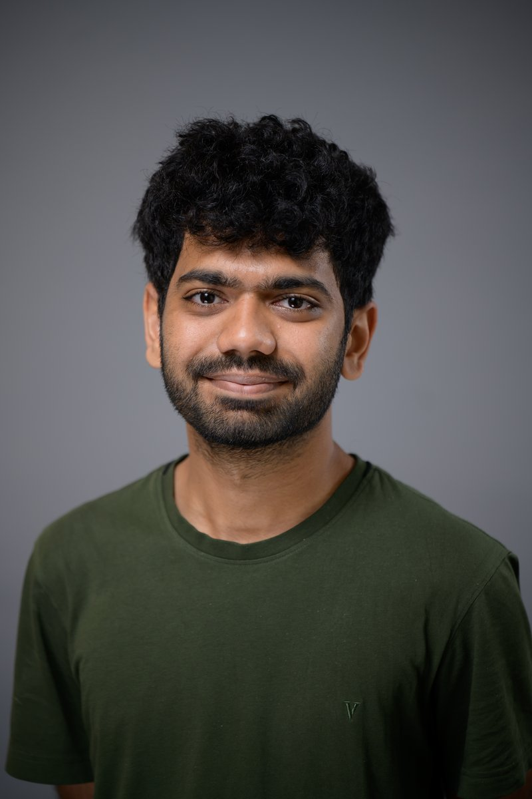
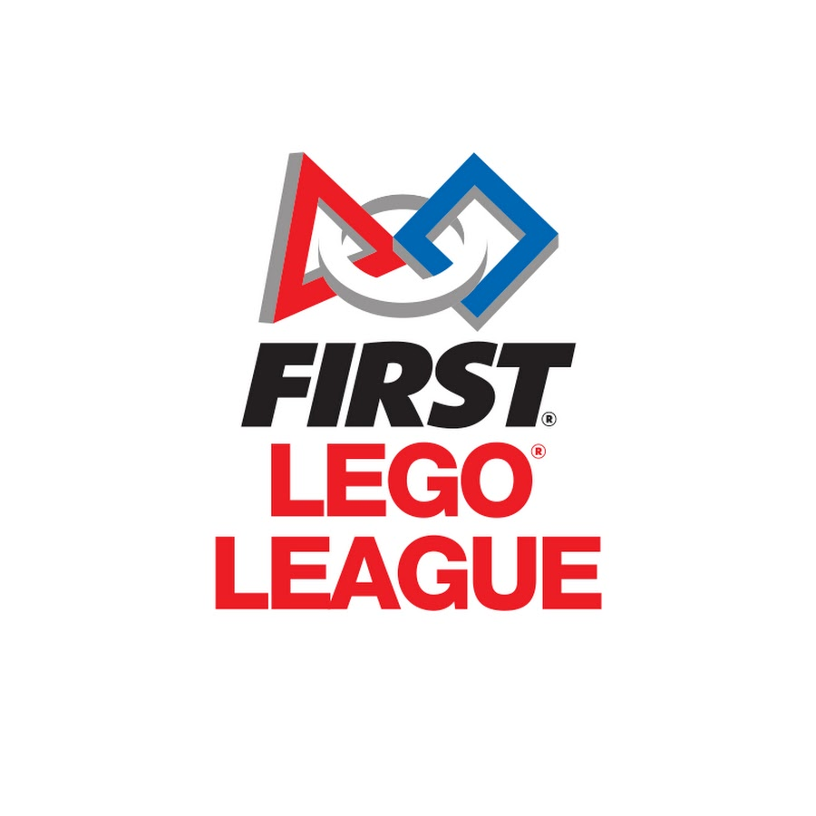
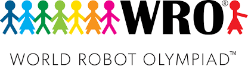
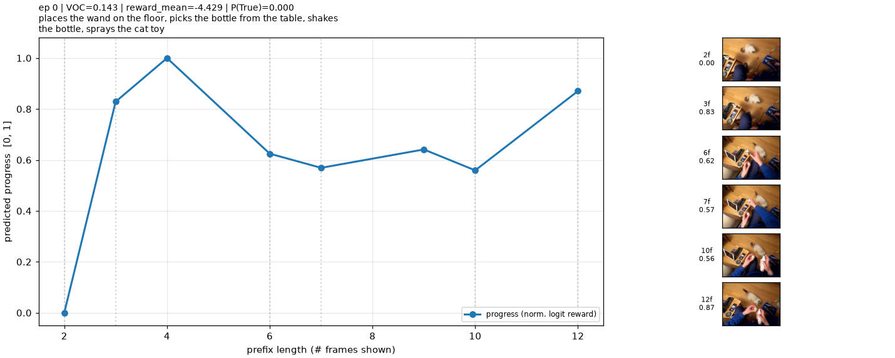
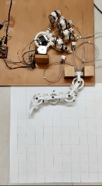
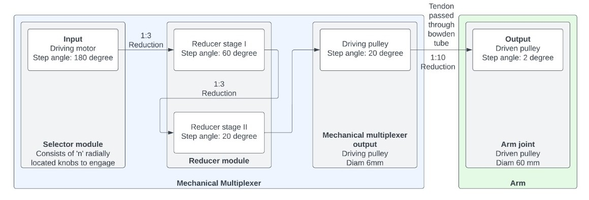
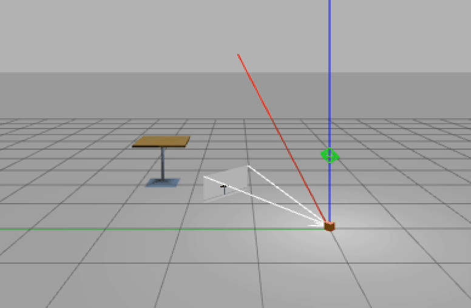
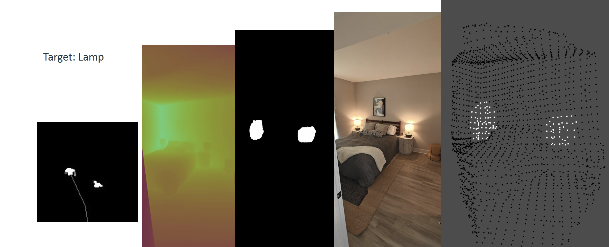

A zero-shot, embodiment-aware traversability framework using multimodal LLMs for navigation costmaps. Visuosemantic caching cuts VLM queries 85.7%, with a 10% higher goal-reaching rate and 33% fewer constraint violations than SOTA VLA baselines on a quadruped.

Aditya Potnis
Robotics · MS CS @ UIUC
I work on enabling robots to act in unstructured environments with foundation models.
I'm a student at UIUC pursuing a MS in Computer Science. I'm advised by Girish Chowdhary at Distributed Autonomous Systems Lab. I'm also fortunate to evaluate foundation model (VLA) training and policy guidance with Unnat Jain and Svetlana Lazebnik.
My research is supported by NASA FireSense, AIFARMS, I-FARM, COALESCE, and NSF ACCESS. I've worked on guardrails for agentic harnesses, trained locomotion policies, and post-trained manipulation foundation models.
Previously at Earthsense, I developed hardware, autonomy and low-level control with torque vectoring for the 750kg TerraMax UGV's dual-ackermann steering and driving controllers for the 200+ TerraPreta and TerraSentia field robots.
I enjoy running and cycling, currently preparing for a 5k in 25 minutes. I also like to doodle and design things.

Research
I work on robots that generalize across embodiments and environments, reasoning over long horizons to plan and execute loco-manipulation tasks in unstructured indoor and outdoor terrain.
Key Areas
- Cross-Embodiment Generalization
- Embodiment Reasoning and Long-Horizon Planning
- Language-Conditioned Manipulation
- Loco-Manipulation for Indoor and Outdoor Environments
News
- Jun 2026"Visual-Language-Guided Task Planning for Horticultural Robots" accepted to Computers and Electronics in Agriculture.
- May 2025Joined Woven by Toyota as a Motion Planning Intern.
- Apr 2024Admitted to UIUC's MS in Computer Science with funding.
- May 2023Received and declined an admit from CMU's MRSD program.
- Jun 2022Won the Best Project Award in Mechanical Engineering at COEP; filed a patent.
- 2015–2018Represented India at WRO and FLL robotics internationals (New Delhi, Costa Rica, Spain, Estonia).
Education
University of Illinois Urbana-Champaign MS in Computer Science
Coursework: Humanoid Robotics, Deep Learning for Computer Vision, 3D Vision, Autonomous Vehicle System Engineering, Networked IoT, Software Engineering, Artificial Intelligence.
College of Engineering, Pune B.Tech in Mechanical Engineering, Minor in Computer Engineering
Coursework: Machine Design, Robotics and Automation, Mechanics of Materials, Engineering Mechanics, Linear Algebra, Vector Calculus.
Publications
CATNAV: Cached Vision-Language Traversability for Efficient Zero-Shot Robot Navigation
CTS-MoE: Keeping Jerk in Check — Jointly Trained Perception-Gated Experts for Smooth Terrain Transitions
CTS-MoE jointly trains a perception-gated mixture-of-experts actor with task-specific critics for smooth terrain transitions in legged locomotion, with no terrain label, selector, or distillation stage at deployment. It raises connected-course success to 93.3% over hierarchical and distilled baselines, cuts action jerk by about a third, and transfers to a Unitree Go1 outdoors.
Visual-Language-Guided Task Planning for Horticultural Robots
A modular, VLM-guided framework that interleaves natural-language queries with action primitives for autonomous crop monitoring. Benchmarking MLLMs on long-horizon planning, it matches humans on short-horizon tasks but degrades on long-horizon ones with noisy semantic maps.
Competitive Robotics


I'm a FIRST and WRO alumnus who has competed in robotics since 2013 and represented India internationally three times. I've mentored a team to Runner-up Best Project Research at the 2018 FLL European Opens in Estonia, and continue to mentor FLL, FTC and Vex teams at Robominds.
Achievements
- 2018 FLL European Championships, Tallinn (coach) — 2nd Best Project Research, 4th Robot Game
- WRO Internationals 2017, Costa Rica
- WRO Internationals 2016, New Delhi — Gold, 2016 Nationals
- FLL Open European Championships 2016, Spain — Top 10
Projects
Perception & Foundation Models
Visual Navigation Policy with V-JEPA2 and Diffusion Policy
Visual Navigation Policy with V-JEPA2 and Diffusion Policy
Trained a visual navigation policy using a frozen V-JEPA2 backbone for spatiotemporal feature extraction from egocentric video, with a Diffusion Policy action head for action prediction.
Adapt: Diffusion-Predicted Pedestrian Avoidance with MPPI Control on the Polaris GEM e4 (CS 588)
Adapt: Diffusion-Predicted Pedestrian Avoidance with MPPI Control on the Polaris GEM e4 (CS 588)
Autonomous driving stack on the Polaris GEM e4 that pairs a diffusion-based pedestrian predictor with an MPPI planner for pedestrian-aware avoidance, plus a text-promptable LiDAR-camera module for open-vocabulary goals.

TOPReward on Ego4D – Token-Probability Rewards for Egocentric Video
TOPReward on Ego4D – Token-Probability Rewards for Egocentric Video
Re-implementation of TOPReward (token-probability zero-shot rewards) benchmarking VLMs (Qwen3-VL, Molmo2) on whether egocentric Ego4D clips match their narration, with per-prefix progress curves and a VOC (Spearman) metric.
Hardware, Simulation & Tooling

Design and Analysis of Tendon actuated Robotic arm using Bowden cables and Mechanical Multiplexing (Thesis @ COEP)
Design and Analysis of Tendon actuated Robotic arm using Bowden cables and Mechanical Multiplexing (Thesis @ COEP)

Designed a modular 4-DOF Bowden cable-driven tendon-actuated robot arm with a mechanical multiplexer enabling full control with only 2 stepper motors, prototyped with FDM printing and including FK/IK solvers. Awarded Best Working Project (Mechanical) at COEP; provisional patent filed (IN202321006687).

Salto Simulator for development
Salto Simulator for development
Gazebo plugin simulating Salto-1P jumping motion as a point object, supporting parabolic trajectory jumping and simulated odometry/pose estimation to accelerate autonomy development.
Generative Models
Low-Rank Adaptation for Video Generation with semantic relative pose prompts (CS 598 3D Vision, HACKER Project)
Low-Rank Adaptation for Video Generation with semantic relative pose prompts (CS 598 3D Vision, HACKER Project)
Fine-tuned Wan 2.2 (1.3B) with LoRA to generate robot-POV navigation videos from text and motion plans for scalable outdoor data synthesis. Evaluated motion fidelity and failure modes, proposing hierarchical motion-primitive curriculum training to improve alignment.

GhibliDream – Studio-Ghibli inspired Stylization of Stable Diffusion (CS 444)
GhibliDream – Studio-Ghibli inspired Stylization of Stable Diffusion (CS 444)
Fine-tuned StableDiffusion-2.0 with DreamBooth on curated Ghibli images using LLM-assisted auto-captioning, achieving 0.90+ CLIP-I cosine similarity on foreground characters while retaining background quality.
Mentoring
Conversational VLA Navigation on a Quadruped (with Sunny Deshpande)
Conversational VLA Navigation on a Quadruped (with Sunny Deshpande)
TL;DR: A vision-language-action navigation stack for the Unitree Go1 that teaches NaVILA-8B when it is unsure. Instead of silently committing to a navigation command, the LoRA-finetuned policy emits an ask user action, a GPT-4o oracle poses one clarifying question grounded in the current camera frames, and the operator's answer is rewritten into the instruction so the robot resumes. Deployed with off-board 8-bit inference streamed to a Jetson Orin over a rosbridge link.
Independent study at UIUC by Sunny Deshpande, which I mentored.
More Projects

Semantic-aware segmentation and navigation using CLIPSeg (CS440)
Semantic-aware segmentation and navigation using CLIPSeg (CS440)
Combined CLIPSeg with Depth-Anything V2 for obstacle-aware gridmap generation (94% accuracy); modified A* planner with goal-object validation achieves 81% success rate for line-of-sight pathfinding.
ROS1 ROS2 bridge for faster debugging and code refactoring
ROS1 ROS2 bridge for faster debugging and code refactoring
Created a Docker image generation repo to accelerate image creation and facilitate easier refactoring.
Design inspired by Vardhan's website.